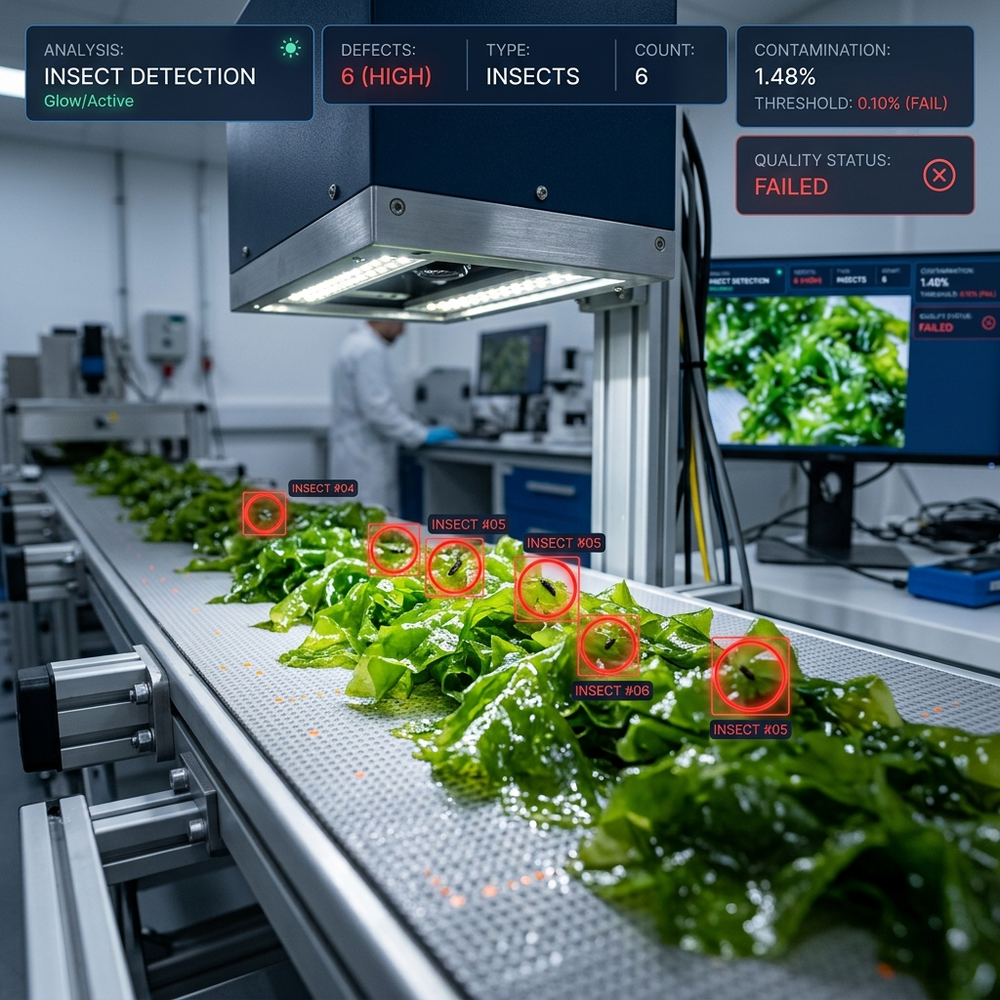

YOLO Explainable AI (XAI)
ระบบเรียนรู้และทดลองแนวคิดเชิงลึกของการวิเคราะห์โมเดลตรวจจับวัตถุ
คลิกเลือกแชนเนลเพื่อแยกดูการตอบสนองเฉพาะแชนเนล หรือวางเมาส์เพื่อดูผลกระทบที่มีต่อ Grad-CAM (สีเขียว = ตัวผลักดันการตรวจจับ, สีแดง = ตัวยับยั้ง)

SIDA แมลง หมาและแมว
หมาและแมว
 จราจร/ถนน
จราจร/ถนน
 เซลล์/ชีวะ
เซลล์/ชีวะ
ลากรูปภาพมาวางที่นี่ หรือคลิกเพื่ออัปโหลดไฟล์ของคุณเอง
ในโมเดลตรวจจับวัตถุประเภท Single-stage detector เช่น YOLO (You Only Look Once) การสืบค้นหาว่าโมเดลตัดสินใจอย่างไรจะแตกต่างจากงานจำแนกประเภทภาพ (Image Classification) แบบดั้งเดิม เนื่องจาก YOLO จะให้ผลลัพธ์ทั้งพิกัดของกล่อง (Regression) และประเภทวัตถุ (Classification) พร้อมๆ กัน ดังนั้น Grad-CAM จึงต้องออกแบบให้เป้าหมาย (Gradient Target) จำเพาะเจาะจงกับ Bounding Box ที่เลือก
สมการคณิตศาสตร์เชิงโต้ตอบ (Interactive Equations)
ลองคลิกที่ส่วนประกอบของสูตรด้านล่าง เพื่อดูความเชื่อมโยงในแผนภาพโครงข่ายจำลอง
สูตรหาค่าน้ำหนักแชนเนล (Channel Weights)
- \alpha_k^c : น้ำหนักความสำคัญของ Feature Channel $k$ สำหรับคลาสเป้าหมาย $c$
- \frac{1}{Z} \sum_i \sum_j : การทำ Global Average Pooling (หาค่าเฉลี่ยสเปเชียลมิติกว้างคูณสูง)
- \frac{\partial Y^c}{\partial A_{i,j}^k} : ค่าความชัน (Gradient) ของผลลัพธ์ของกล่องวัตถุเทียบกับค่าใน Feature Map
สูตรการสังเคราะห์เป็น Heatmap (Activation Map)
- \text{ReLU}(\cdot) : ฟังก์ชัน Rectified Linear Unit เพื่อกรองเอาเฉพาะฟีเจอร์ที่มีผลบวกต่อการตรวจจับ
- A^k : แผ่น Feature Map แชนเนลที่ $k$ ในเลเยอร์ที่เราทำการตรวจสอบ
ขั้นตอนการไหลข้อมูล (Information Propagation Flow)
1 Grad-CAM
วิเคราะห์โดยอาศัยผลคูณภายใน (Inner Product) ระหว่าง Feature map กับค่าเฉลี่ยสปาเชียลของเกรเดียนต์ เหมาะสำหรับตรวจสอบพฤติกรรมภาพรวมทั่วไป และมีความสม่ำเสมอในการแสดงผล
2 Grad-CAM++
ใช้ค่าน้ำหนักเกรเดียนต์อันดับสอง (Second-order gradients) ช่วยปรับน้ำหนักให้วัตถุชิ้นเดียวกันที่ปรากฏซ้ำกันในรูป (Multiple Instances) โดนตรวจหาความเชื่อมโยงได้อย่างสมบูรณ์ยิ่งขึ้น
3 Eigen-CAM
ไม่ขึ้นกับค่าความชันเลย (Gradient-Free) แต่หาเวกเตอร์หลักชิ้นแรก (First Principal Component) ของเลเยอร์ฟีเจอร์แทน ข้อดีคือทำความเข้าใจรวดเร็วและเป็นสากลไม่ขึ้นกับประเภทคลาส
คัดลอกโค้ดด้านล่างนี้ไปปรับใช้กับโมเดล YOLOv8 หรือ YOLOv11 ในเครื่องคอมพิวเตอร์ของคุณ โดยโค้ดจะถูกปรับเปลี่ยนแบบไดนามิกตามค่าตัวเลือกปัจจุบันที่คุณเลือกใน Dashboard
# โค้ดกำลังสร้าง...